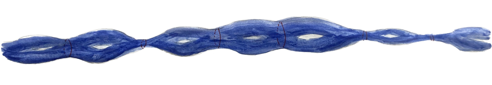
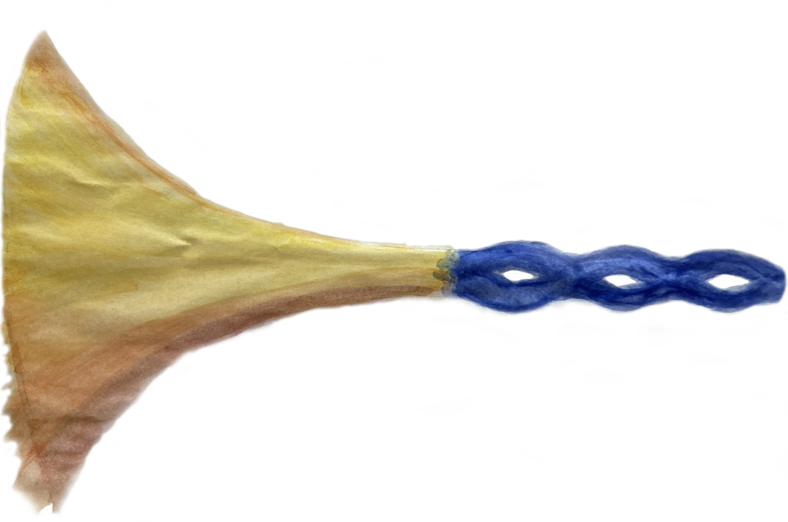

Introduction
Welcome to my personal webpage !
I have been a PhD student at the Institut Mathématiques de Jussieu-Paris Rive Gauche (IMJ-PRG) since September 2025. My PhD thesis focuses on the study of geodesic flows on hyperbolic manifolds of infinite volume. It is, in a way, a continuation of the work I described in my Master’s thesis (in French). It is a subject that draws on geometry, representation theory, various forms of analysis, and even has certain probabilistic aspects!
My supervisors are Adrien Boulanger, Gilles Courtois and Antonin Guilloux.
Prior to that, I prepared and obtained the agrégation in mathematics (a French teaching competitive exam) in 2024 at the ENS in Rennes, then went to complete a Master's degree in Marseille.
From September 2026, I will be co-organising the IMJ-PRG PhD Seminar.

Curriculum vitae (July 2026)
Contact
